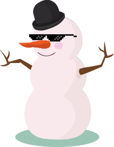

This is our first place entry to the 2016 Ontario Engineering Competition (OEC), Programming category. In teams of up to 4, we're given 6-7 hours to address a realistic problem by 1) creating a software solution and 2) preparing an oral presentation to demonstrate the solution. See the rules and our schedule
This year, the problem was to create a game to teach 5-7 year olds programming.
My teammate and I made a drag-and-drop game where you connect blocks together to transform data. You pass each level by creating the required output.
A playable demo is here; it's also embedded further down the page. It's fully touch compatible. Minor bug fixes are in this version compared to the one we presented with. The powerpoint accompanying our oral presentation can be found here
Tips
- get hints on how to use each block by clicking on them
- the output block always has no connectors
The Team ¶
- Johnson Zhong - API design, level design, graphics
- Zhuowei Zhang - engine implementation, infrastructure integration

Back in Toronto
Stakeholders ¶
Kids
- develop transferable skills
- be entertained
- grow confidence
Parents
- monitor kids' progress
- help their child without being able to program themselves
- spend little money
Teachers (apologies for the cynicism)
- avoid additional work
- avoid retraining
Problem ¶
Why is programming difficult to learn? The biggest factor is that there are many prerequisite skills to creating useful programs: typing, math, and dealing with abstract objects, to name the primary ones.
Syntax complicates the challenge. Not only do beginners have to learn the concepts, they also have to wrestle with the grammar and vocabulary of a new language. Most syntaxes are unforgiving to the extent that a single character stops your program from compiling/running. Accuracy demands this high only frustrates the beginner.
Reframe ¶
It's not realistic to expect 5-7 year olds to build useful programs after playing a game. Rather, a more effective goal is to introduce how to think like a programmer, and if possible, to make it fun and memorable. That's what we based our solution on. Consequently, we focused on programming semantics, and aggressively removed syntax's difficulty and frustration.
For the same reason, we removed math and logical operations. Concrete objects and intuitive object combinations are naturally understood. This reasoning's why addition is often taught by adding apples (or another replacement fruit) before adding symbols or numbers.
Solution ¶
The main design objectives of our solution are extensibility and simplicity.
Extensibility ¶
Extensibility means making it easy for anyone to create content for the game. Schools and parents care about this because it affects how easily they can adopt our game to fit their curriculum.
We implemented extensibility through a level system. This system is described in our drag and drop API. Each level is a standalone JSON that includes all game play content. With the game content entirely separated from the game engine, this is the strongest form of extensibility.
Simplicity ¶
Simplicity in user experience lets players follow their intuitions more naturally. This is all about removing extraneous difficulties not inherit to learning programming semantics.
Simplicity in the game engine leads to low development cost and wide distribution. We built it as a web application so that any platform with internet access can play it without us having to specifically create versions for each platform.
We implemented simplicity through the data flow programming model. Every piece of data is represented as blocks and nothing is done "off screen". Fundamentally a function is a mapping from input to output. The importance of naturally thinking in this way cannot be overstated.
Challenges ¶
- lack of manpower - we were the only team with 2 members
- task division - we solved this by defining the drag and drop API very early
Reflection ¶
We won because we chose appropriate design objectives and aggressively based our design decisions on them. Avoiding the common pitfall of a program trying to do too much, our game focuses and delivers on the areas that matter to our target audience.
Designing for extensibility meant the deadline was more manageable. Our minimum viable product (MVP) was the engine and the first level, with any additional levels seamlessly added with extra time. We managed to produce 4 working levels that covers simple combination, if, while, and functions/modules.
Since I've often teamed up with Zhuowei, our teamwork proved decisive. The efficiency gain from experience cannot be stressed more since we had only 7 hours from problem announcement to plan the solution, implement it, test it, document it, and create the presentation for it (we had to submit the powerpoint presentation within the alotted 7 hours even though we gave the presentation the next day).
Trivia ¶
- The name "Snowfun" was derived from me saying that it "was no fun"
- "Funk" was another candidate for the name, but we decided against it
- The snowmen visuals were selected after I came up with the name (image credits)
- The snowman with the bowler hat is called Frosty while the snowman with the toque is called Chilly
- Snowcoats make you colder (because you're covered in snow, obviously)
Gains from Experience ¶
- $1000 (each) and a trophy
- Experience on creating clean interfaces and separation of concerns